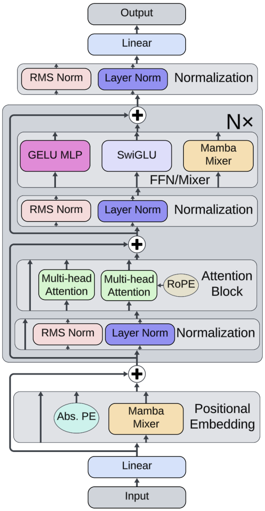
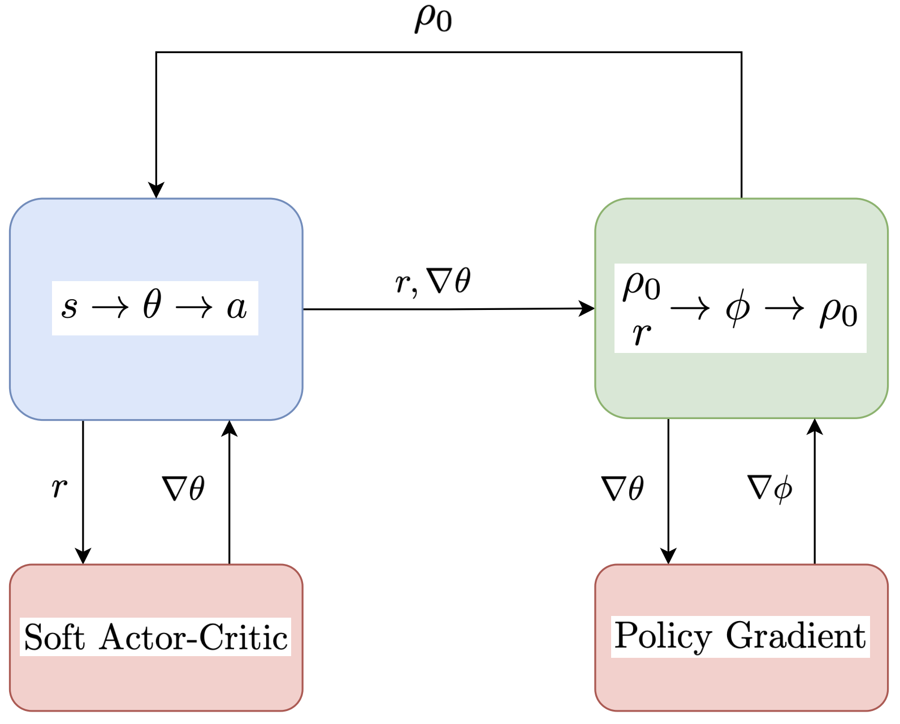
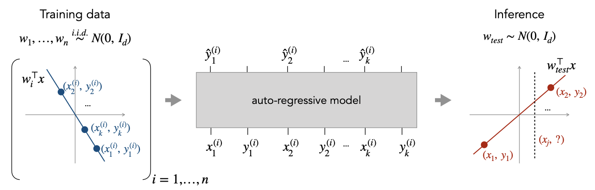
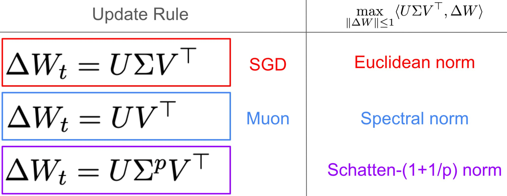
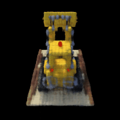
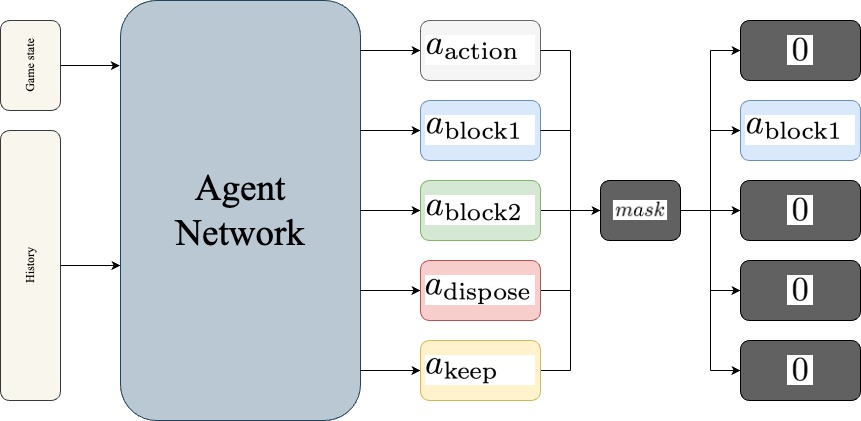
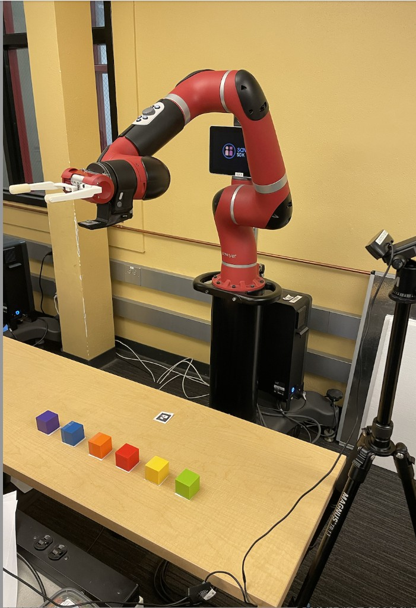
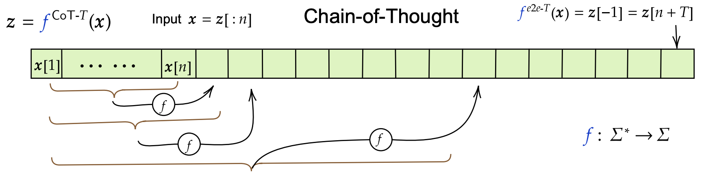
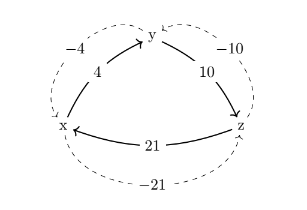

I am a graduate student in Electrical Engineering and Computer Sciences (EECS) at UC Berkeley, with a focus on reinforcement learning and robotics. I work in Berkeley Artificial Intelligence Research (BAIR) with my advisor Avideh Zakhor on robot learning for locomotion, manipulation, and real-world automation.
I received my B.A. in Mathematics and Computer Science from Berkeley and am now pursuing an M.S. in EECS. My background is in computer vision, deep reinforcement learning, machine learning, robotics, and related areas. I am actively seeking research and industry opportunities in robotics, machine learning, and applied AI.
Graduate Research Assistant
Developing locomotion and manipulation policies for Unitree G1 humanoid robots with Professor Avideh Zakhor. Running experiments in Isaac Sim via Isaac Lab with PPO and imitation learning for whole-body control, with the goal of simulation-to-real deployment.
Undergraduate Research Assistant
Applied deep reinforcement learning to a real-world tracked robot for vacuuming and sealing applications. Developed ROS2 and Gazebo simulation pipelines and trained CNN-LSTM policies with PPO for autonomous navigation.
Teaching Assistant & Course Staff
Tutor for CS 182 (Deep Learning), reader for CS 189 (Machine Learning), and academic intern for CS 61A (Structure and Interpretation of Computer Programs). Led discussion sections, developed and graded assignments and exams, and supported hundreds of students across introductory programming, machine learning, and deep learning.

Can Custom Models Learn In-Context? An Exploration of Hybrid Architecture Performance on In-Context Learning Tasks
Explores how hybrid architectures (GPT-2/LLaMa, LLaMa/Mamba) perform on in-context learning tasks. Proposes the "ICL regression score" and releases a typed, modular Python package.

Automatic Curriculum Learning with Gradient Reward Signals
Uses gradient norm reward signals in automatic curriculum learning for DRL. Evaluated on PointMaze, AntMaze, and AdroitHandRelocate. Shows accelerated learning and improved generalization.

Can Transformers Learn Sequential Function Classes In Context?
Extends the in-context learning framework of Garg et al. to sequential function classes. We introduce a sliding-window sequential function class and show that transformers can in-context learn these tasks; we also study robustness under randomized labels.

Interpolating Muon
Project on interpolating optimizers and the geometry of gradient updates. Analysis of matrix update rules and their associated norms: SGD (Euclidean), Muon (spectral norm), and a family of Schatten-(1+1/p) norms. Proposes a cheaper alternative to Muon that matches its empirical performance.

CS 180: Computer Vision
Course project writeups: image processing, filters, face morphing, photo mosaics, diffusion models, neural radiance field.

Coup: RL agent for the card game
Reinforcement learning agent for Coup. Agent network with game state and history, action heads with masking for legal moves.

Sawyrter
Robotics project using a Sawyer collaborative arm for object manipulation, with computer vision for detecting colored blocks and ArUco markers. Team project at Berkeley.

Sample Complexity for Agnostic Learning with Autoregressive Chain of Thought
Sample and computational complexity of learning prompt-to-answer mappings when the model generates a chain-of-thought and the final token is the answer. Inspired by Joshi et al. on learning with autoregressive chain-of-thought.

Algorithm(s) and Complexity for Condorcet Consistent Voting
Literature review with Amar Shah on complexities for Condorcet-consistent voting systems (Dodgson, Kemeny, Ranked Pairs) and applications to simple stable voting.
I play jazz bass and piano, write and record my own music, and perform with a few groups in the Bay Area.
Check out my personal artist Spotify, Frankly Martini on Spotify and Instagram, and The Fabric on Instagram.
During my time at UC Berkeley, I've studied in UC Jazz with Frank Martin, Ted Moore, and Dan Zinn. I've also taken private lessons on bass with Daniel Lucca Parenti and on piano with Joan Cifarelli. I teach private lessons and lead my own ensemble in the UC Jazz program.
ryancampbell [at] berkeley [dot] edu
scholar: scholar.google.com/citations?user=GxvmqCAAAAAJ
github: github.com/riensou
linkedin: linkedin.com/in/ryancampbell24